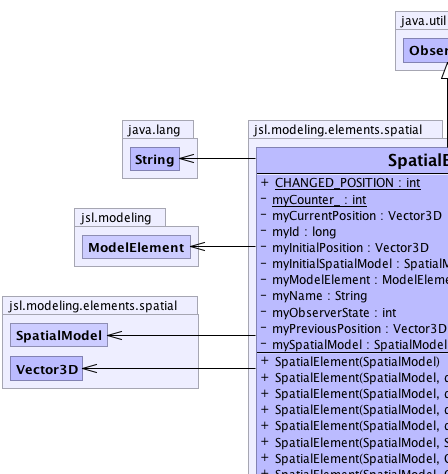
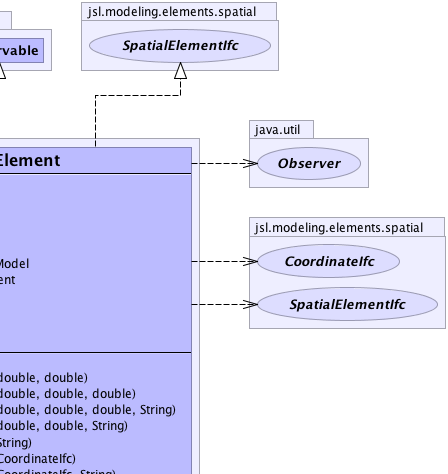
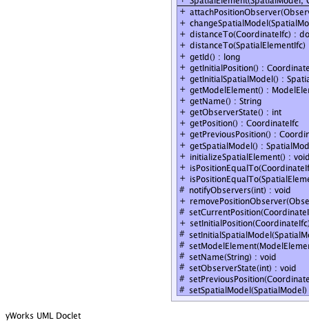
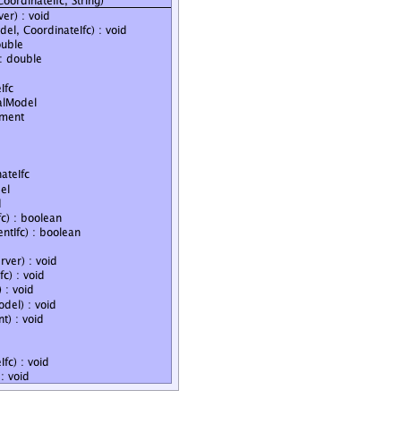

java.util.Observable
jsl.modeling.elements.spatial.SpatialElement
java.util.Observable
jsl.modeling.elements.spatial.SpatialElement
|
||||||||||
| PREV CLASS NEXT CLASS | FRAMES NO FRAMES | |||||||||
| SUMMARY: NESTED | FIELD | CONSTR | METHOD | DETAIL: FIELD | CONSTR | METHOD | |||||||||
java.lang.Object
public class SpatialElement
A SpatialElement represents an object that is within a spatial model. A spatial element can be in one and only one spatial model at a time. A spatial model may contain many spatial elements. Spatial elements can be added to and removed from a spatial model. A spatial element has a position within a spatial model. The position should allow the distance between spatial elements to be computed within a spatial model. If the position of the spatial element is changed then the spatial element should notify any position observers and should indicate to its spatial model that the position has changed. A spatial element should start in one spatial model. The starting spatial model is the element's initial model. A spatial element may move to other spatial models during a simulation and thus should always have a current spatial model. A spatial element may be related to a ModelElement.
|  |  |
|  |  |
| Field Summary | |
|---|---|
static int |
CHANGED_POSITION
An enum to indicate that an element changed its position within a spatial model |
private static int |
myCounter_
incremented to give a running total of the number of elements created |
private Vector3D |
myCurrentPosition
Holds the current position in in the spatial model |
private long |
myId
A unique id given to the element |
private Vector3D |
myInitialPosition
Holds the initial position in the spatial model |
private SpatialModel |
myInitialSpatialModel
A reference to a spatial model to allow location within the spatial context |
private ModelElement |
myModelElement
If the element is related to a JSL ModelElement then this refers to the element |
private java.lang.String |
myName
A name for the element |
private int |
myObserverState
Is used by observers to check what state the element is in when notified of a change |
private Vector3D |
myPreviousPosition
Holds the previous position in the spatial model |
private SpatialModel |
mySpatialModel
A reference to a spatial model to allow location within the spatial context |
| Constructor Summary | |
|---|---|
SpatialElement(SpatialModel spatialModel)
Creates a spatial element with the given spatial model. |
|
SpatialElement(SpatialModel spatialModel,
CoordinateIfc coordinate)
Creates a spatial element with the given parent and spatial model. |
|
SpatialElement(SpatialModel spatialModel,
CoordinateIfc coordinate,
java.lang.String name)
Creates a spatial element with the given parent and spatial model. |
|
SpatialElement(SpatialModel spatialModel,
double x,
double y)
Creates a spatial element at the given (x, y, 0.0) coordinates |
|
SpatialElement(SpatialModel spatialModel,
double x,
double y,
double z)
Creates a spatial element at the given (x,y,z) coordinates |
|
SpatialElement(SpatialModel spatialModel,
double x,
double y,
double z,
java.lang.String name)
Creates a spatial element at the given (x,y,z) coordinates |
|
SpatialElement(SpatialModel spatialModel,
double x,
double y,
java.lang.String name)
Creates a spatial element at the given (x, y, 0.0) coordinates |
|
SpatialElement(SpatialModel spatialModel,
java.lang.String name)
Creates a spatial element with the given parent and spatial model. |
|
| Method Summary | |
|---|---|
void |
attachPositionObserver(java.util.Observer observer)
Implementor of this interface should allow Observers to be attached. |
void |
changeSpatialModel(SpatialModel spatialModel,
CoordinateIfc coordinate)
Changes the spatial model for this element and places the element at the supplied coordinate within the new spatial model. |
double |
distanceTo(CoordinateIfc coordinate)
This is a "convenience" method for getting the distance from this element to the supplied coordinate within the underlying spatial model |
double |
distanceTo(SpatialElementIfc element)
This is a "convenience" method for getting the distance from this element to the supplied element within the underlying spatial model Requirement: The elements must be in the same spatial model. |
long |
getId()
Gets a uniquely assigned integer identifier for this element. |
CoordinateIfc |
getInitialPosition()
|
SpatialModel |
getInitialSpatialModel()
Returns the spatial model that should hold this element at the beginning of each replication of a simulation |
ModelElement |
getModelElement()
Gets the ModelElement associated with this spatial element May be null |
java.lang.String |
getName()
Gets this element's name. |
int |
getObserverState()
Observers can call this to get an integer representing the state of the element after the observers have been notified |
CoordinateIfc |
getPosition()
|
CoordinateIfc |
getPreviousPosition()
|
SpatialModel |
getSpatialModel()
Returns the current spatial model that contains this element |
void |
initializeSpatialElement()
This method should be called to initialize the spatial element prior to running a simulation |
boolean |
isPositionEqualTo(CoordinateIfc coordinate)
Returns true if the position of this element is the same as supplied coordinate within the underlying spatial model. |
boolean |
isPositionEqualTo(SpatialElementIfc element)
Returns true if the position of this element is the same as the position of the supplied element within the underlying spatial model. |
protected void |
notifyObservers(int observerState)
|
void |
removePositionObserver(java.util.Observer observer)
Remove the observer from this PositionIfc |
protected void |
setCurrentPosition(CoordinateIfc currentPosition)
|
void |
setInitialPosition(CoordinateIfc initialPosition)
Sets the initial position of the element. |
protected void |
setInitialSpatialModel(SpatialModel spatialModel)
Sets the initial spatial model for the position. |
protected void |
setModelElement(ModelElement modelElement)
Sets the model element associated with this spatial element, may be null |
protected void |
setName(java.lang.String str)
Sets the name of this element |
protected void |
setObserverState(int observerState)
Can be called by sub-classes to set an indicator of the state of the position prior to notifying observers |
protected void |
setPreviousPosition(CoordinateIfc previousPosition)
|
protected void |
setSpatialModel(SpatialModel spatialModel)
Sets the spatial model for the spatial element. |
| Methods inherited from class java.util.Observable |
|---|
addObserver, clearChanged, countObservers, deleteObserver, deleteObservers, hasChanged, notifyObservers, notifyObservers, setChanged |
| Methods inherited from class java.lang.Object |
|---|
clone, equals, finalize, getClass, hashCode, notify, notifyAll, toString, wait, wait, wait |
| Field Detail |
|---|
private static int myCounter_
public static final int CHANGED_POSITION
private Vector3D myInitialPosition
private Vector3D myPreviousPosition
private Vector3D myCurrentPosition
private SpatialModel mySpatialModel
private SpatialModel myInitialSpatialModel
private int myObserverState
private java.lang.String myName
private long myId
private ModelElement myModelElement
| Constructor Detail |
|---|
public SpatialElement(SpatialModel spatialModel)
spatialModel -
public SpatialElement(SpatialModel spatialModel,
CoordinateIfc coordinate)
spatialModel - name -
public SpatialElement(SpatialModel spatialModel,
java.lang.String name)
spatialModel - name -
public SpatialElement(SpatialModel spatialModel,
double x,
double y)
spatialModel - x - y -
public SpatialElement(SpatialModel spatialModel,
double x,
double y,
java.lang.String name)
spatialModel - x - y -
public SpatialElement(SpatialModel spatialModel,
double x,
double y,
double z)
spatialModel - x - y - z - name -
public SpatialElement(SpatialModel spatialModel,
double x,
double y,
double z,
java.lang.String name)
spatialModel - x - y - z - name -
public SpatialElement(SpatialModel spatialModel,
CoordinateIfc coordinate,
java.lang.String name)
spatialModel - coordinate - name - | Method Detail |
|---|
public final java.lang.String getName()
getName in interface IdentityIfcpublic final long getId()
getId in interface IdentityIfcpublic final CoordinateIfc getPosition()
getPosition in interface PositionIfcgetPosition in interface SpatialElementIfcpublic final CoordinateIfc getInitialPosition()
getInitialPosition in interface SpatialElementIfcpublic final CoordinateIfc getPreviousPosition()
getPreviousPosition in interface SpatialElementIfcpublic final int getObserverState()
SpatialElementIfc
getObserverState in interface SpatialElementIfcpublic final double distanceTo(CoordinateIfc coordinate)
SpatialElementIfc
distanceTo in interface SpatialElementIfcpublic final boolean isPositionEqualTo(CoordinateIfc coordinate)
SpatialElementIfc
isPositionEqualTo in interface SpatialElementIfcpublic final double distanceTo(SpatialElementIfc element)
SpatialElementIfc
distanceTo in interface SpatialElementIfcpublic final boolean isPositionEqualTo(SpatialElementIfc element)
SpatialElementIfc
isPositionEqualTo in interface SpatialElementIfcpublic final SpatialModel getSpatialModel()
SpatialElementIfc
getSpatialModel in interface SpatialElementIfcpublic final SpatialModel getInitialSpatialModel()
SpatialElementIfc
getInitialSpatialModel in interface SpatialElementIfc
public final void changeSpatialModel(SpatialModel spatialModel,
CoordinateIfc coordinate)
SpatialElementIfc
changeSpatialModel in interface SpatialElementIfcpublic ModelElement getModelElement()
SpatialElementIfc
getModelElement in interface SpatialElementIfcpublic void initializeSpatialElement()
SpatialElementIfc
initializeSpatialElement in interface SpatialElementIfcpublic final void attachPositionObserver(java.util.Observer observer)
SpatialElementIfc
attachPositionObserver in interface SpatialElementIfcpublic final void removePositionObserver(java.util.Observer observer)
SpatialElementIfc
removePositionObserver in interface SpatialElementIfcpublic final void setInitialPosition(CoordinateIfc initialPosition)
SpatialElementIfc
setInitialPosition in interface SpatialElementIfcprotected void setSpatialModel(SpatialModel spatialModel)
protected void setModelElement(ModelElement modelElement)
modelElement - protected final void setCurrentPosition(CoordinateIfc currentPosition)
currentPosition - The currentPosition to set.protected final void setPreviousPosition(CoordinateIfc previousPosition)
previousPosition - The previousPosition to set.protected void setName(java.lang.String str)
str - The name as a string.protected final void setInitialSpatialModel(SpatialModel spatialModel)
spatialModel - protected final void setObserverState(int observerState)
observerState - The observerState to set.protected final void notifyObservers(int observerState)
observerState - The observerState to set.
|
||||||||||
| PREV CLASS NEXT CLASS | FRAMES NO FRAMES | |||||||||
| SUMMARY: NESTED | FIELD | CONSTR | METHOD | DETAIL: FIELD | CONSTR | METHOD | |||||||||